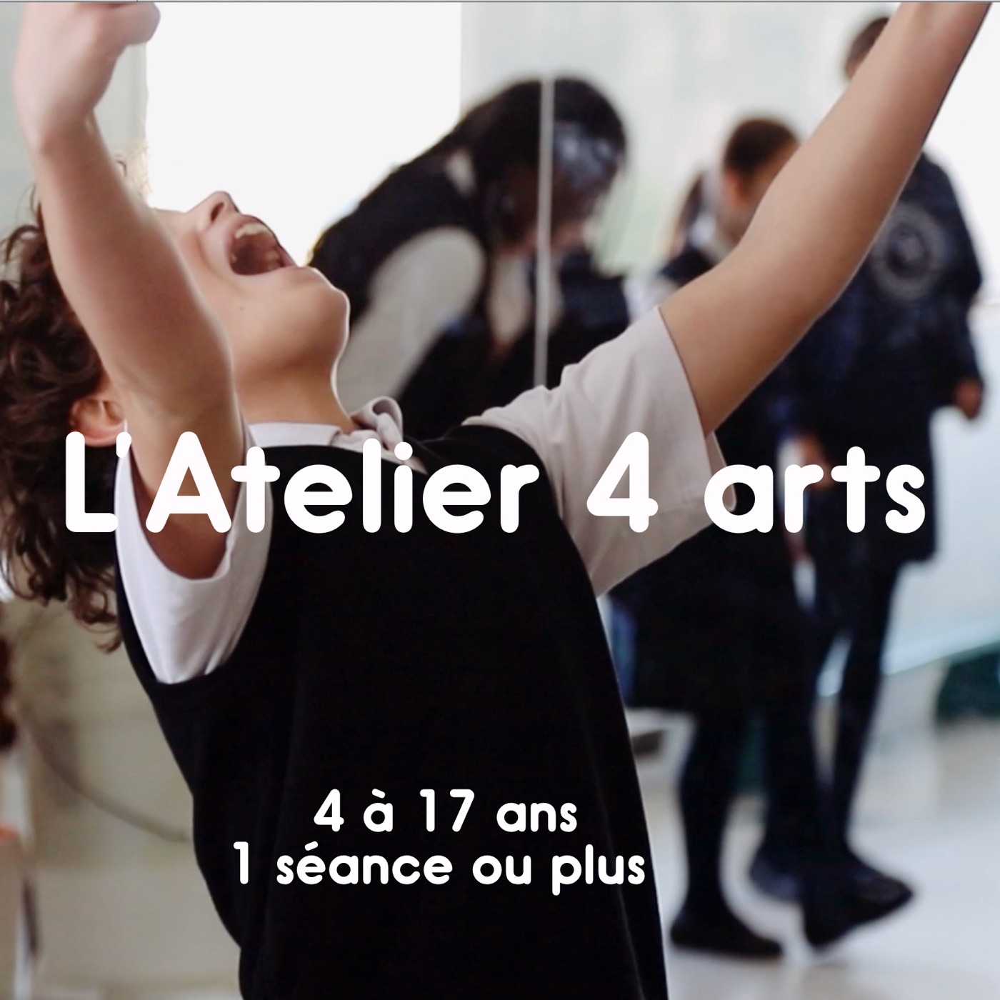
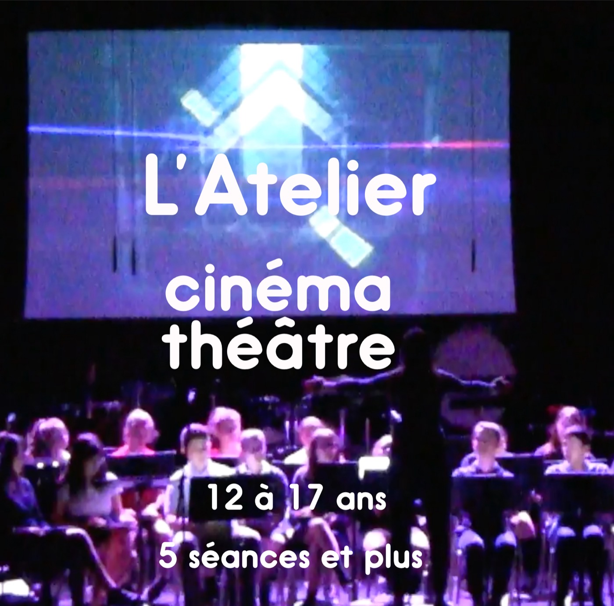
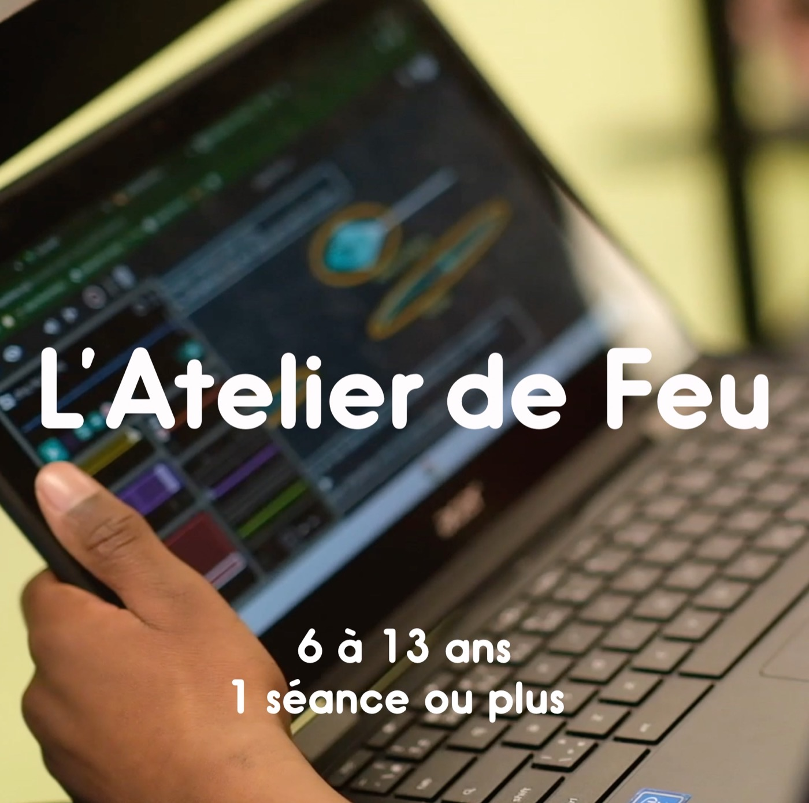
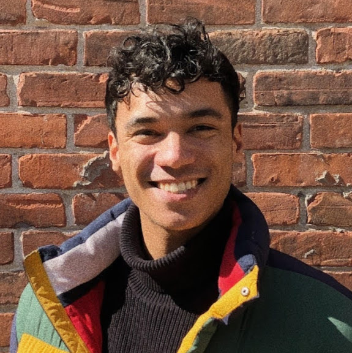

L’expérience Fonofone dans vos classes
Notre équipe aguerrie de médiation culturelle se rend dans votre classe pour offrir à vos groupes des ateliers de création au Fonofone, dans les quatre disciplines artistiques enseignées à l'école : musique, arts plastiques, danse, art dramatique.
Nous utilisons l'équipement informatique dont vous disposez (tableau numérique interactif, chromebook, iPad ou autres).
Ou :
nous viendrons, au besoin, avec notre propre équipement (flotte de iPad).

Musique
Les élèves sont amenés à concevoir et à réaliser en collectif un projet de création musicale issue de la mise en commun des idées de tous et l'interpréter en performance directe, comme un orchestre de musique de chambre.
Danse et théâtre
Grâce à la nouvelle interface "fono-image" de Fonofone, les élèves en équipes seront amenés à créer une histoire, à la sonoriser et à l'interpréter en réaction monde sonore qui leur sera proposé ou qu'ils auront créé.
Arts plastiques
En fonction d'une thématique donnée, les élèves seront amenés à créer une représentation visuelle qui sera numérisée et téléchargée dans l'interface fono-image. Ils devront ensuite interpréter leur image en choisissant et plaçant sur celle-ci des sons aidant à révélerle sens et les émotions qu'ils ont voulu exprimer dans leur image.

Mettre en musique ce que l’on voit à l’écran ou sur scène, c’est le défi que vos élèves doivent relever. Sonorisez une pièce de théâtre de votre école ou un film muet emblématique de votre choix. Nous accompagnons vos élèves dans une recherche musicale qui marie analyse et interprétation. Une aventure qui pourra les mener jusqu’à une présentation finale en public.

Ateliers OMNIfone
Fonofone s'associe à l'Orchestre Métropolitain pour offrir OMNIfone, une série d'activités créatives autour d'une oeuvre du grand répertoire classique, L’Oiseau de feu d’Igor Stravinsky. Vos élèves se familiariseront avec les principaux motifs et thèmes de l'oeuvre. Il leur sera proposé divers jeux de transformation des extraits qui les amèneront de manière créative à découvrir et explorer différents procédés d'écriture.
Véronique Girard est une artiste visuelle et sonore activement engagée dans la communauté. Motivée par la démocratisation de l'art, elle s'implique dans des projets éducatifs et de médiation auprès de publics et d'organismes variés. Elle a une grande expérience d'animation Fonofone en milieu scolaire.
Danseuse classique et contemporaine, claveciniste et artiste lyrique de réputation internationale, Anne-Claire Raineri a participé à un grand nombre de récitals et productions d'opéras à travers le monde en plus de tournées avec le Cirque du soleil. Établie au Québec depuis seize ans, elle enseigne la musique, la danse et l'art dramatique au niveau primaire et secondaire. Son approche multidisciplinaire et son intérêt marqué pour les technologies innovantes en fait une animatrice Fonofone très prisée.

Performeur, metteur en scène et vidéaste, il est d’abord formé en art dramatique puis diplômé en chant classique. Paolo a à coeur de rendre l’art accessible. Il est directeur artistique de la compagnie l’Opéra Théâtre du Miroir, se battant pour une meilleure représentation des minorités dans la musique classique. Sa facilité de communication avec les jeunes les met en confiance et les amène à développer leur potentiel de créativité.